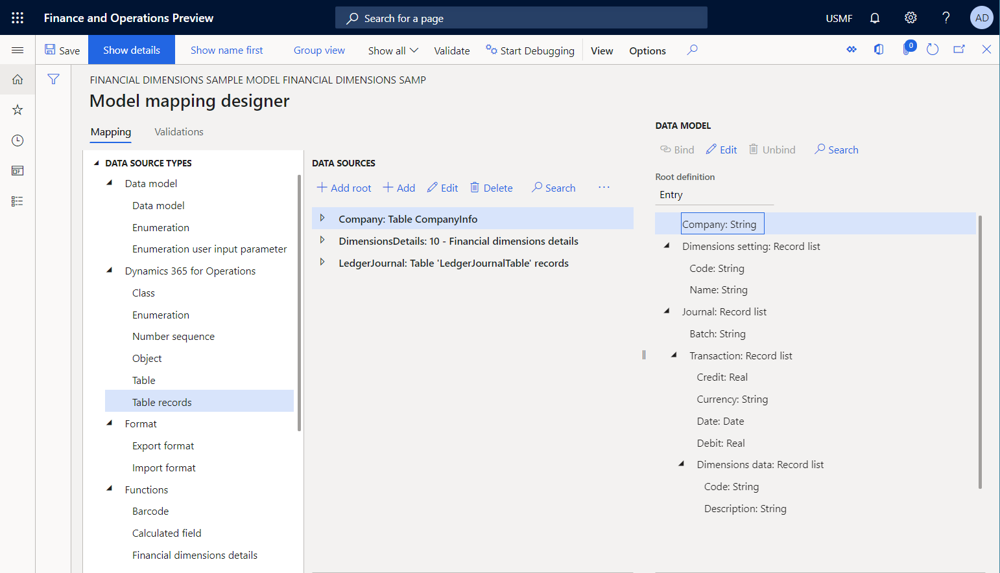

ER – Verwendung von Finanzdimensionen als Datenquelle (Teil 2: Modellzuordnung)
[!include[banner](../../includes/banner.md)]In den folgenden Schritten wird erläutert, wie ein Benutzer mit der Rolle Systemadministrator oder Entwickler für elektronische Berichterstellung ein ER-Modell zur Nutzung von Finanzdimensionen als Datenquelle für ER-Berichte nutzen kann. Diese Schritte können in jedem Unternehmen ausgeführt werden.
Um diese Schritte auszuführen, müssen Sie erst die Schritte im Verfahren „ER - Finanzdimensionen als Datenquelle nutzen (Teil 1: Design des Datenmodells)“ ausführen.
Hinzufügen von erforderlichen Datenquellen zur Modellzuordnung
- Wechseln Sie zu Organisationsverwaltung > Elektronische Berichterstellung > Konfigurationen.
- Wählen Sie in der Struktur "Finanzdimensions-Beispielmodell".
- Klicken Sie auf Designer.
- Klicken Sie auf "Modell der Datenquelle zuordnen".
- Klicken Sie auf "Neu".
- Wählen Sie im Feld "Definition" "Erfassung" aus.
- Geben Sie im Feld "Name" "Dimensionsdatenzuordnung" ein.
- Geben Sie im Feld "Beschreibung" "Dimensionsdatenzuordnung" ein.
- Klicken Sie auf "Speichern".
- Klicken Sie auf Designer.
- Wählen Sie in der Struktur 'Dynamics 365 for Operations\Tabelle' aus.
- Klicken Sie auf "Stamm hinzufügen".
- Geben Sie im Feld Name "Firma" ein.
- Im Tabellenfeld geben Sie "CompanyInfo" ein.
- Klicken Sie auf "OK".
- Wählen Sie in der Struktur "Funktionen\Finanzdimensionsdetails".
- Klicken Sie auf "Stamm hinzufügen".
- Diese Datenquelle gibt an, wie der Bereich der Finanzdimensionen für einen Bericht definiert wird, der dieses Modell als Datenquelle verwendet.
- Geben Sie im Feld "Name" einen Wert ein.
- Wählen Sie "Ja" im Feld "Dimensionen anfordern".
- Wählen Sie die Option Ja aus, um dem Benutzer die Auswahl zur Laufzeit zu ermöglichen. Bei "Neun" werden standardmäßig alle Finanzdimensionen der aktuellen Instanz verwendet.
- Wählen Sie im Feld Finanzdimensionen "Juristische Person" aus.
- Wählen Sie "Alle" aus, um dem Benutzer die Auswahl der gewünschten Dimensionen für die aktuelle Instanz zu ermöglichen. Wählen Sie "Juristische Person" aus, um dem Benutzer die Auswahl der Dimensionen für das Unternehmen zu ermöglichen. Wählen Sie "Dimension" aus, um dem Benutzer die Auswahl von Dimensionen über einen einzelnen Dimensionssatzes zu ermöglichen.
- Wählen Sie "Ja" im Feld "Hauptkonto anfordern".
- Legen Sie „Hauptkonto anfordern“ auf „Ja“ fest, um Benutzern zu ermöglichen, das Hauptkonto als Teil der Liste mit den Dimensionen auszuwählen. Bei „Nein“ wird das Hauptkonto nicht in der Liste mit den Dimensionen aufgenommen und die Option „Hauptkonto erforderlich“ ist aktiviert. Wenn „Hauptkonto erforderlich“ auf Ja festgelegt ist, wird das Hauptkonto unabhängig von der Auswahl des Benutzers in der Liste mit den Dimensionen festgelegt.
- Klicken Sie auf "OK".

- Wählen Sie in der Struktur 'Dynamics 365 for Operations\Tabellendatensätze' aus.
- Klicken Sie auf "Stamm hinzufügen".
- Geben Sie im Feld "Name" "LedgerJournal" ein.
- Wählen Sie "Ja" im Feld "Ask for query".
- Im Tabellenfeld geben Sie "LedgerJournalTable" ein.
- Klicken Sie auf "OK". 
Zuordnen von Datenmodell-Elementen zu hinzugefügten Datenquellen
- Erweitern Sie in der Struktur 'Erfassung'.
- Erweitern Sie in der Struktur 'Erfassung\Buchung'.
- Erweitern Sie in der Struktur 'Erfassung\Buchung\Dimensionsdaten'.
- Erweitern Sie 'Dimensionseinstellung' in der Struktur.
- Erweitern Sie in der Struktur "LedgerJournal".
- Erweitern Sie 'LedgerJournal\<Relations' in der Struktur.
- Erweitern Sie 'LedgerJournal<Relations\LedgerJournalTrans' in der Struktur.
- Wählen Sie 'LedgerJournal<Relations\LedgerJournalTrans\Voucher' in der Struktur.
- Wählen Sie in der Struktur 'Erfassung\Buchung\Beleg'.
- Klicken Sie auf Binden.
- Wählen Sie in der Strukturdarstellung 'LedgerJournal<Relations\LedgerJournalTrans\Account.Dimension(LedgerDimension.Dimension)'.
- Beachten Sie, dass für jede Referenz zu Finanzdimensionen, die beispielsweise auf LedgerDimension festgelegt ist, ein entsprechender Datenquellenartikel verfügbar ist (LedgerDimension.Dimension). Dieser Datenquellenartikel bietet die Finanzdimensionen des Dimensionssatzes als Liste des Datensatzes.
- Erweitern Sie in der Strukturdarstellung 'LedgerJournal\<Relations\LedgerJournalTrans\Account.Dimension(LedgerDimension.Dimension)'.
- Erweitern Sie in der Struktur 'LedgerJournal<Relations\LedgerJournalTrans\Account.Dimension(LedgerDimension.Dimension)\Main account and dimensions'.
- Erweitern Sie in der Struktur 'LedgerJournal<Relations\LedgerJournalTrans\Account.Dimension(LedgerDimension.Dimension)\Main account and dimensions\Value'.
- Erweitern Sie in der Struktur 'LedgerJournal<Relations\LedgerJournalTrans\Account.Dimension(LedgerDimension.Dimension)\Main account and dimensions\Value\Definitionen'.
- Wählen Sie in der Struktur 'LedgerJournal<Relations\LedgerJournalTrans\Account.Dimension(LedgerDimension.Dimension)\Main account and dimensions\Value\Definitionen\Name'.
- Wählen Sie in der Struktur 'Journal\Transaction\Dimensions data\Name'.
- Klicken Sie auf Binden.
- Wählen Sie in der Struktur 'LedgerJournal<Relations\LedgerJournalTrans\Account.Dimension(LedgerDimension.Dimension)\Main account and dimensions\Value\Description'.
- Wählen Sie in der Struktur 'Journal\Transaction\Dimensions data\Description'.
- Klicken Sie auf Binden.
- Wählen Sie in der Struktur 'LedgerJournal<Relations\LedgerJournalTrans\Account.Dimension(LedgerDimension.Dimension)\Main account and dimensions\Value\Code'.
- Wählen Sie in der Struktur 'Journal\Transaction\Dimensions data\Code'.
- Klicken Sie auf Binden.
- Wählen Sie in der Struktur 'LedgerJournal<Relations\LedgerJournalTrans\Account.Dimension(LedgerDimension.Dimension)\Main account and dimensions'.
- Wählen Sie in der Struktur 'Journal\Transaction\Dimensions data'.
- Klicken Sie auf Binden.
- Wählen Sie 'LedgerJournal<Relations\LedgerJournalTrans\Debit(AmountCurDebit)'.
- Wählen Sie in der Struktur 'Erfassung\Buchung\Debit'.
- Klicken Sie auf Binden.
- Wählen Sie 'LedgerJournal<Relations\LedgerJournalTrans\Date(TransDate)'.
- Wählen Sie in der Struktur 'Erfassung\Buchung\Date'.
- Klicken Sie auf Binden.
- Wählen Sie 'LedgerJournal<Relations\LedgerJournalTrans\Currency(CurrencyCode)'.
- Wählen Sie in der Struktur 'Journal\Transaction\Currency'.
- Klicken Sie auf Binden.
- Wählen Sie 'LedgerJournal<Relations\LedgerJournalTrans\Credit(AmountCurCredit)'.
- Wählen Sie in der Struktur 'Journal\Transaction\Credit'.
- Klicken Sie auf Binden.
- Wählen Sie 'LedgerJournal<Relations\LedgerJournalTrans' in der Struktur.
- Wählen Sie in der Struktur 'Journal\Transaction'.
- Klicken Sie auf Binden.
- In der Struktur ausgewählte 'LedgerJournal\Journal batch number(JournalNum)'.
- Wählen Sie in der Struktur 'Journal\Batch'.
- Klicken Sie auf Binden.
- Wählen Sie in der Struktur 'LedgerJournal' aus.
- Wählen Sie in der Struktur 'Journal' aus.
- Klicken Sie auf Binden.
- Erweitern Sie in der Struktur 'Dimensions'.
- In der Struktur erweitern Sie 'Dimensions\Main account and dimensions'.
- In der Struktur erweitern Sie 'Dimensions\Main account and dimensions\Definition'.
- In der Struktur wählen Sie 'Dimensions\Main account and dimensions\Name'.
- Wählen Sie 'Dimensionseinstellung\Code' in der Struktur.
- Klicken Sie auf Binden.
- In der Struktur wählen Sie 'Dimensions\Main account and dimensions\Definition\Report column name'.
- Wählen Sie 'Dimensionseinstellung\Name' in der Struktur.
- Klicken Sie auf Binden.
- In der Struktur wählen Sie 'Dimensions\Main account and dimensions'.
- Wählen Sie 'Dimensions setting' in der Struktur.
- Klicken Sie auf Binden.
- Wählen Sie in der Struktur 'Company' aus.
- Klicken Sie auf "Bearbeiten".
- Geben Sie im Feld "expressionAsStringText" 'Company.'find()'.'name()'' ein.
- Company.'find()'.'name()'
- Klicken Sie auf Speichern.

- Schließen Sie die Seite.
- Klicken Sie auf Speichern.
- Schließen Sie die Seite.
Abschließen dieser Version dieses Entwurfsmodells
- Schließen Sie die Seite.
- Schließen Sie die Seite.
- Klicken Sie auf "Status ändern".
- Klicken Sie auf "Abgeschlossen".
- Klicken Sie auf "OK".